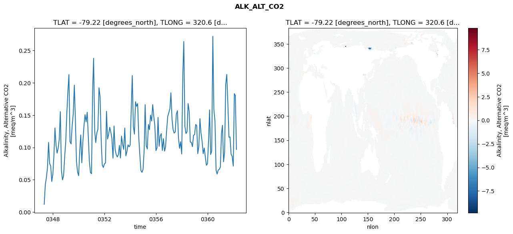
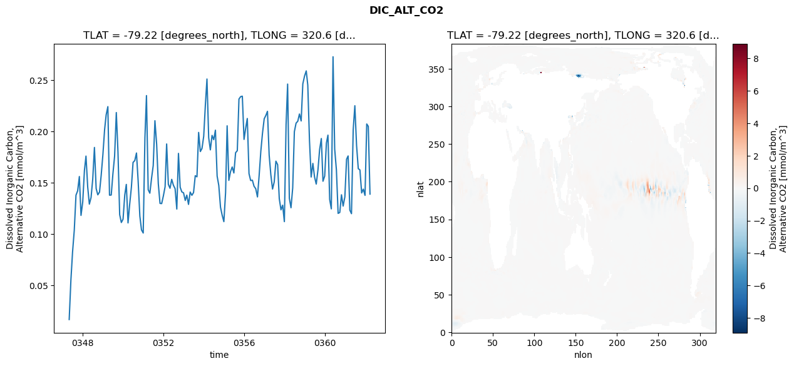
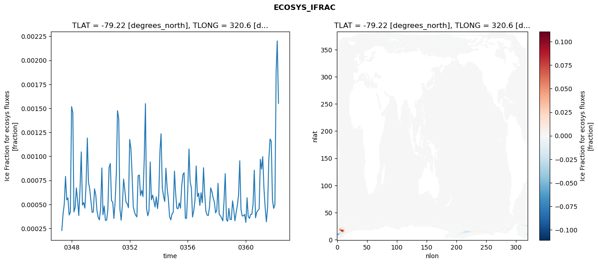
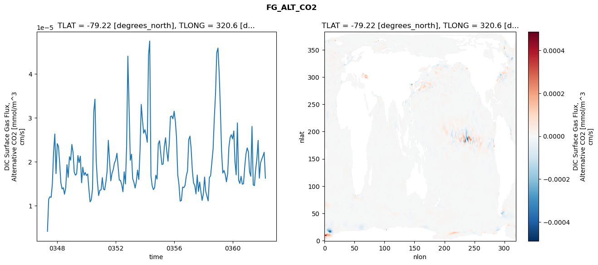

glb-dor_North_Atlantic_basin_035_1999-04-01_00141#
Simulation details#
Case: smyle.cdr-atlas-v0.glb-dor_North_Atlantic_basin_035_1999-04-01_00141.001
Basin: North_Atlantic_basin
Polygon: 35.0
Start date: 1999-04
Show code cell source Hide code cell source
import xarray as xr
import matplotlib.pyplot as plt
Show code cell source Hide code cell source
zarr_store = "/path/to/zarr/store"
# Parameters
zarr_store = "/global/cfs/projectdirs/m4746/Projects/Ocean-CDR-Atlas-v0/data/validation/smyle.cdr-atlas-v0.glb-dor_North_Atlantic_basin_035_1999-04-01_00141.001.validation.zarr"
Show code cell source Hide code cell source
%%time
ds_o = xr.open_zarr(zarr_store).compute()
ds_o
CPU times: user 575 ms, sys: 467 ms, total: 1.04 s
Wall time: 1.29 s
<xarray.Dataset> Size: 2MB
Dimensions: (nlat: 384, nlon: 320, time: 180)
Coordinates:
TLAT float64 8B -79.22
TLONG float64 8B 320.6
ULAT float64 8B -78.95
ULONG float64 8B 321.1
* time (time) object 1kB 0347-05-01 00:00:00 ... 0362-04-01 0...
z_t float32 4B 500.0
Dimensions without coordinates: nlat, nlon
Data variables:
ALK_ALT_CO2_diff (nlat, nlon) float32 492kB nan nan nan ... nan nan nan
ALK_ALT_CO2_rmse (time) float64 1kB 0.01203 0.0426 ... 0.1804 0.09698
DIC_ALT_CO2_diff (nlat, nlon) float32 492kB nan nan nan ... nan nan nan
DIC_ALT_CO2_rmse (time) float64 1kB 0.0165 0.05513 ... 0.2049 0.1389
ECOSYS_IFRAC_diff (nlat, nlon) float32 492kB nan nan nan ... nan nan nan
ECOSYS_IFRAC_rmse (time) float64 1kB 0.0002283 0.0004023 ... 0.001552
FG_ALT_CO2_diff (nlat, nlon) float32 492kB nan nan nan ... nan nan nan
FG_ALT_CO2_rmse (time) float64 1kB 4.161e-06 1.15e-05 ... 1.627e-05xarray.Dataset
- nlat: 384
- nlon: 320
- time: 180
- TLAT()float64-79.22
- long_name :
- array of t-grid latitudes
- units :
- degrees_north
array(-79.22052261)
- TLONG()float64320.6
- long_name :
- array of t-grid longitudes
- units :
- degrees_east
array(320.56250892)
- ULAT()float64-78.95
- long_name :
- array of u-grid latitudes
- units :
- degrees_north
array(-78.95289509)
- ULONG()float64321.1
- long_name :
- array of u-grid longitudes
- units :
- degrees_east
array(321.12500894)
- time(time)object0347-05-01 00:00:00 ... 0362-04-...
- bounds :
- time_bound
- long_name :
- time
array([cftime.DatetimeNoLeap(347, 5, 1, 0, 0, 0, 0, has_year_zero=True), cftime.DatetimeNoLeap(347, 6, 1, 0, 0, 0, 0, has_year_zero=True), cftime.DatetimeNoLeap(347, 7, 1, 0, 0, 0, 0, has_year_zero=True), cftime.DatetimeNoLeap(347, 8, 1, 0, 0, 0, 0, has_year_zero=True), cftime.DatetimeNoLeap(347, 9, 1, 0, 0, 0, 0, has_year_zero=True), cftime.DatetimeNoLeap(347, 10, 1, 0, 0, 0, 0, has_year_zero=True), cftime.DatetimeNoLeap(347, 11, 1, 0, 0, 0, 0, has_year_zero=True), cftime.DatetimeNoLeap(347, 12, 1, 0, 0, 0, 0, has_year_zero=True), cftime.DatetimeNoLeap(348, 1, 1, 0, 0, 0, 0, has_year_zero=True), cftime.DatetimeNoLeap(348, 2, 1, 0, 0, 0, 0, has_year_zero=True), cftime.DatetimeNoLeap(348, 3, 1, 0, 0, 0, 0, has_year_zero=True), cftime.DatetimeNoLeap(348, 4, 1, 0, 0, 0, 0, has_year_zero=True), cftime.DatetimeNoLeap(348, 5, 1, 0, 0, 0, 0, has_year_zero=True), cftime.DatetimeNoLeap(348, 6, 1, 0, 0, 0, 0, has_year_zero=True), cftime.DatetimeNoLeap(348, 7, 1, 0, 0, 0, 0, has_year_zero=True), cftime.DatetimeNoLeap(348, 8, 1, 0, 0, 0, 0, has_year_zero=True), cftime.DatetimeNoLeap(348, 9, 1, 0, 0, 0, 0, has_year_zero=True), cftime.DatetimeNoLeap(348, 10, 1, 0, 0, 0, 0, has_year_zero=True), cftime.DatetimeNoLeap(348, 11, 1, 0, 0, 0, 0, has_year_zero=True), cftime.DatetimeNoLeap(348, 12, 1, 0, 0, 0, 0, has_year_zero=True), cftime.DatetimeNoLeap(349, 1, 1, 0, 0, 0, 0, has_year_zero=True), cftime.DatetimeNoLeap(349, 2, 1, 0, 0, 0, 0, has_year_zero=True), cftime.DatetimeNoLeap(349, 3, 1, 0, 0, 0, 0, has_year_zero=True), cftime.DatetimeNoLeap(349, 4, 1, 0, 0, 0, 0, has_year_zero=True), cftime.DatetimeNoLeap(349, 5, 1, 0, 0, 0, 0, has_year_zero=True), cftime.DatetimeNoLeap(349, 6, 1, 0, 0, 0, 0, has_year_zero=True), cftime.DatetimeNoLeap(349, 7, 1, 0, 0, 0, 0, has_year_zero=True), cftime.DatetimeNoLeap(349, 8, 1, 0, 0, 0, 0, has_year_zero=True), cftime.DatetimeNoLeap(349, 9, 1, 0, 0, 0, 0, has_year_zero=True), cftime.DatetimeNoLeap(349, 10, 1, 0, 0, 0, 0, has_year_zero=True), cftime.DatetimeNoLeap(349, 11, 1, 0, 0, 0, 0, has_year_zero=True), cftime.DatetimeNoLeap(349, 12, 1, 0, 0, 0, 0, has_year_zero=True), cftime.DatetimeNoLeap(350, 1, 1, 0, 0, 0, 0, has_year_zero=True), cftime.DatetimeNoLeap(350, 2, 1, 0, 0, 0, 0, has_year_zero=True), cftime.DatetimeNoLeap(350, 3, 1, 0, 0, 0, 0, has_year_zero=True), cftime.DatetimeNoLeap(350, 4, 1, 0, 0, 0, 0, has_year_zero=True), cftime.DatetimeNoLeap(350, 5, 1, 0, 0, 0, 0, has_year_zero=True), cftime.DatetimeNoLeap(350, 6, 1, 0, 0, 0, 0, has_year_zero=True), cftime.DatetimeNoLeap(350, 7, 1, 0, 0, 0, 0, has_year_zero=True), cftime.DatetimeNoLeap(350, 8, 1, 0, 0, 0, 0, has_year_zero=True), cftime.DatetimeNoLeap(350, 9, 1, 0, 0, 0, 0, has_year_zero=True), cftime.DatetimeNoLeap(350, 10, 1, 0, 0, 0, 0, has_year_zero=True), cftime.DatetimeNoLeap(350, 11, 1, 0, 0, 0, 0, has_year_zero=True), cftime.DatetimeNoLeap(350, 12, 1, 0, 0, 0, 0, has_year_zero=True), cftime.DatetimeNoLeap(351, 1, 1, 0, 0, 0, 0, has_year_zero=True), cftime.DatetimeNoLeap(351, 2, 1, 0, 0, 0, 0, has_year_zero=True), cftime.DatetimeNoLeap(351, 3, 1, 0, 0, 0, 0, has_year_zero=True), cftime.DatetimeNoLeap(351, 4, 1, 0, 0, 0, 0, has_year_zero=True), cftime.DatetimeNoLeap(351, 5, 1, 0, 0, 0, 0, has_year_zero=True), cftime.DatetimeNoLeap(351, 6, 1, 0, 0, 0, 0, has_year_zero=True), cftime.DatetimeNoLeap(351, 7, 1, 0, 0, 0, 0, has_year_zero=True), cftime.DatetimeNoLeap(351, 8, 1, 0, 0, 0, 0, has_year_zero=True), cftime.DatetimeNoLeap(351, 9, 1, 0, 0, 0, 0, has_year_zero=True), cftime.DatetimeNoLeap(351, 10, 1, 0, 0, 0, 0, has_year_zero=True), cftime.DatetimeNoLeap(351, 11, 1, 0, 0, 0, 0, has_year_zero=True), cftime.DatetimeNoLeap(351, 12, 1, 0, 0, 0, 0, has_year_zero=True), cftime.DatetimeNoLeap(352, 1, 1, 0, 0, 0, 0, has_year_zero=True), cftime.DatetimeNoLeap(352, 2, 1, 0, 0, 0, 0, has_year_zero=True), cftime.DatetimeNoLeap(352, 3, 1, 0, 0, 0, 0, has_year_zero=True), cftime.DatetimeNoLeap(352, 4, 1, 0, 0, 0, 0, has_year_zero=True), cftime.DatetimeNoLeap(352, 5, 1, 0, 0, 0, 0, has_year_zero=True), cftime.DatetimeNoLeap(352, 6, 1, 0, 0, 0, 0, has_year_zero=True), cftime.DatetimeNoLeap(352, 7, 1, 0, 0, 0, 0, has_year_zero=True), cftime.DatetimeNoLeap(352, 8, 1, 0, 0, 0, 0, has_year_zero=True), cftime.DatetimeNoLeap(352, 9, 1, 0, 0, 0, 0, has_year_zero=True), cftime.DatetimeNoLeap(352, 10, 1, 0, 0, 0, 0, has_year_zero=True), cftime.DatetimeNoLeap(352, 11, 1, 0, 0, 0, 0, has_year_zero=True), cftime.DatetimeNoLeap(352, 12, 1, 0, 0, 0, 0, has_year_zero=True), cftime.DatetimeNoLeap(353, 1, 1, 0, 0, 0, 0, has_year_zero=True), cftime.DatetimeNoLeap(353, 2, 1, 0, 0, 0, 0, has_year_zero=True), cftime.DatetimeNoLeap(353, 3, 1, 0, 0, 0, 0, has_year_zero=True), cftime.DatetimeNoLeap(353, 4, 1, 0, 0, 0, 0, has_year_zero=True), cftime.DatetimeNoLeap(353, 5, 1, 0, 0, 0, 0, has_year_zero=True), cftime.DatetimeNoLeap(353, 6, 1, 0, 0, 0, 0, has_year_zero=True), cftime.DatetimeNoLeap(353, 7, 1, 0, 0, 0, 0, has_year_zero=True), cftime.DatetimeNoLeap(353, 8, 1, 0, 0, 0, 0, has_year_zero=True), cftime.DatetimeNoLeap(353, 9, 1, 0, 0, 0, 0, has_year_zero=True), cftime.DatetimeNoLeap(353, 10, 1, 0, 0, 0, 0, has_year_zero=True), cftime.DatetimeNoLeap(353, 11, 1, 0, 0, 0, 0, has_year_zero=True), cftime.DatetimeNoLeap(353, 12, 1, 0, 0, 0, 0, has_year_zero=True), cftime.DatetimeNoLeap(354, 1, 1, 0, 0, 0, 0, has_year_zero=True), cftime.DatetimeNoLeap(354, 2, 1, 0, 0, 0, 0, has_year_zero=True), cftime.DatetimeNoLeap(354, 3, 1, 0, 0, 0, 0, has_year_zero=True), cftime.DatetimeNoLeap(354, 4, 1, 0, 0, 0, 0, has_year_zero=True), cftime.DatetimeNoLeap(354, 5, 1, 0, 0, 0, 0, has_year_zero=True), cftime.DatetimeNoLeap(354, 6, 1, 0, 0, 0, 0, has_year_zero=True), cftime.DatetimeNoLeap(354, 7, 1, 0, 0, 0, 0, has_year_zero=True), cftime.DatetimeNoLeap(354, 8, 1, 0, 0, 0, 0, has_year_zero=True), cftime.DatetimeNoLeap(354, 9, 1, 0, 0, 0, 0, has_year_zero=True), cftime.DatetimeNoLeap(354, 10, 1, 0, 0, 0, 0, has_year_zero=True), cftime.DatetimeNoLeap(354, 11, 1, 0, 0, 0, 0, has_year_zero=True), cftime.DatetimeNoLeap(354, 12, 1, 0, 0, 0, 0, has_year_zero=True), cftime.DatetimeNoLeap(355, 1, 1, 0, 0, 0, 0, has_year_zero=True), cftime.DatetimeNoLeap(355, 2, 1, 0, 0, 0, 0, has_year_zero=True), cftime.DatetimeNoLeap(355, 3, 1, 0, 0, 0, 0, has_year_zero=True), cftime.DatetimeNoLeap(355, 4, 1, 0, 0, 0, 0, has_year_zero=True), cftime.DatetimeNoLeap(355, 5, 1, 0, 0, 0, 0, has_year_zero=True), cftime.DatetimeNoLeap(355, 6, 1, 0, 0, 0, 0, has_year_zero=True), cftime.DatetimeNoLeap(355, 7, 1, 0, 0, 0, 0, has_year_zero=True), cftime.DatetimeNoLeap(355, 8, 1, 0, 0, 0, 0, has_year_zero=True), cftime.DatetimeNoLeap(355, 9, 1, 0, 0, 0, 0, has_year_zero=True), cftime.DatetimeNoLeap(355, 10, 1, 0, 0, 0, 0, has_year_zero=True), cftime.DatetimeNoLeap(355, 11, 1, 0, 0, 0, 0, has_year_zero=True), cftime.DatetimeNoLeap(355, 12, 1, 0, 0, 0, 0, has_year_zero=True), cftime.DatetimeNoLeap(356, 1, 1, 0, 0, 0, 0, has_year_zero=True), cftime.DatetimeNoLeap(356, 2, 1, 0, 0, 0, 0, has_year_zero=True), cftime.DatetimeNoLeap(356, 3, 1, 0, 0, 0, 0, has_year_zero=True), cftime.DatetimeNoLeap(356, 4, 1, 0, 0, 0, 0, has_year_zero=True), cftime.DatetimeNoLeap(356, 5, 1, 0, 0, 0, 0, has_year_zero=True), cftime.DatetimeNoLeap(356, 6, 1, 0, 0, 0, 0, has_year_zero=True), cftime.DatetimeNoLeap(356, 7, 1, 0, 0, 0, 0, has_year_zero=True), cftime.DatetimeNoLeap(356, 8, 1, 0, 0, 0, 0, has_year_zero=True), cftime.DatetimeNoLeap(356, 9, 1, 0, 0, 0, 0, has_year_zero=True), cftime.DatetimeNoLeap(356, 10, 1, 0, 0, 0, 0, has_year_zero=True), cftime.DatetimeNoLeap(356, 11, 1, 0, 0, 0, 0, has_year_zero=True), cftime.DatetimeNoLeap(356, 12, 1, 0, 0, 0, 0, has_year_zero=True), cftime.DatetimeNoLeap(357, 1, 1, 0, 0, 0, 0, has_year_zero=True), cftime.DatetimeNoLeap(357, 2, 1, 0, 0, 0, 0, has_year_zero=True), cftime.DatetimeNoLeap(357, 3, 1, 0, 0, 0, 0, has_year_zero=True), cftime.DatetimeNoLeap(357, 4, 1, 0, 0, 0, 0, has_year_zero=True), cftime.DatetimeNoLeap(357, 5, 1, 0, 0, 0, 0, has_year_zero=True), cftime.DatetimeNoLeap(357, 6, 1, 0, 0, 0, 0, has_year_zero=True), cftime.DatetimeNoLeap(357, 7, 1, 0, 0, 0, 0, has_year_zero=True), cftime.DatetimeNoLeap(357, 8, 1, 0, 0, 0, 0, has_year_zero=True), cftime.DatetimeNoLeap(357, 9, 1, 0, 0, 0, 0, has_year_zero=True), cftime.DatetimeNoLeap(357, 10, 1, 0, 0, 0, 0, has_year_zero=True), cftime.DatetimeNoLeap(357, 11, 1, 0, 0, 0, 0, has_year_zero=True), cftime.DatetimeNoLeap(357, 12, 1, 0, 0, 0, 0, has_year_zero=True), cftime.DatetimeNoLeap(358, 1, 1, 0, 0, 0, 0, has_year_zero=True), cftime.DatetimeNoLeap(358, 2, 1, 0, 0, 0, 0, has_year_zero=True), cftime.DatetimeNoLeap(358, 3, 1, 0, 0, 0, 0, has_year_zero=True), cftime.DatetimeNoLeap(358, 4, 1, 0, 0, 0, 0, has_year_zero=True), cftime.DatetimeNoLeap(358, 5, 1, 0, 0, 0, 0, has_year_zero=True), cftime.DatetimeNoLeap(358, 6, 1, 0, 0, 0, 0, has_year_zero=True), cftime.DatetimeNoLeap(358, 7, 1, 0, 0, 0, 0, has_year_zero=True), cftime.DatetimeNoLeap(358, 8, 1, 0, 0, 0, 0, has_year_zero=True), cftime.DatetimeNoLeap(358, 9, 1, 0, 0, 0, 0, has_year_zero=True), cftime.DatetimeNoLeap(358, 10, 1, 0, 0, 0, 0, has_year_zero=True), cftime.DatetimeNoLeap(358, 11, 1, 0, 0, 0, 0, has_year_zero=True), cftime.DatetimeNoLeap(358, 12, 1, 0, 0, 0, 0, has_year_zero=True), cftime.DatetimeNoLeap(359, 1, 1, 0, 0, 0, 0, has_year_zero=True), cftime.DatetimeNoLeap(359, 2, 1, 0, 0, 0, 0, has_year_zero=True), cftime.DatetimeNoLeap(359, 3, 1, 0, 0, 0, 0, has_year_zero=True), cftime.DatetimeNoLeap(359, 4, 1, 0, 0, 0, 0, has_year_zero=True), cftime.DatetimeNoLeap(359, 5, 1, 0, 0, 0, 0, has_year_zero=True), cftime.DatetimeNoLeap(359, 6, 1, 0, 0, 0, 0, has_year_zero=True), cftime.DatetimeNoLeap(359, 7, 1, 0, 0, 0, 0, has_year_zero=True), cftime.DatetimeNoLeap(359, 8, 1, 0, 0, 0, 0, has_year_zero=True), cftime.DatetimeNoLeap(359, 9, 1, 0, 0, 0, 0, has_year_zero=True), cftime.DatetimeNoLeap(359, 10, 1, 0, 0, 0, 0, has_year_zero=True), cftime.DatetimeNoLeap(359, 11, 1, 0, 0, 0, 0, has_year_zero=True), cftime.DatetimeNoLeap(359, 12, 1, 0, 0, 0, 0, has_year_zero=True), cftime.DatetimeNoLeap(360, 1, 1, 0, 0, 0, 0, has_year_zero=True), cftime.DatetimeNoLeap(360, 2, 1, 0, 0, 0, 0, has_year_zero=True), cftime.DatetimeNoLeap(360, 3, 1, 0, 0, 0, 0, has_year_zero=True), cftime.DatetimeNoLeap(360, 4, 1, 0, 0, 0, 0, has_year_zero=True), cftime.DatetimeNoLeap(360, 5, 1, 0, 0, 0, 0, has_year_zero=True), cftime.DatetimeNoLeap(360, 6, 1, 0, 0, 0, 0, has_year_zero=True), cftime.DatetimeNoLeap(360, 7, 1, 0, 0, 0, 0, has_year_zero=True), cftime.DatetimeNoLeap(360, 8, 1, 0, 0, 0, 0, has_year_zero=True), cftime.DatetimeNoLeap(360, 9, 1, 0, 0, 0, 0, has_year_zero=True), cftime.DatetimeNoLeap(360, 10, 1, 0, 0, 0, 0, has_year_zero=True), cftime.DatetimeNoLeap(360, 11, 1, 0, 0, 0, 0, has_year_zero=True), cftime.DatetimeNoLeap(360, 12, 1, 0, 0, 0, 0, has_year_zero=True), cftime.DatetimeNoLeap(361, 1, 1, 0, 0, 0, 0, has_year_zero=True), cftime.DatetimeNoLeap(361, 2, 1, 0, 0, 0, 0, has_year_zero=True), cftime.DatetimeNoLeap(361, 3, 1, 0, 0, 0, 0, has_year_zero=True), cftime.DatetimeNoLeap(361, 4, 1, 0, 0, 0, 0, has_year_zero=True), cftime.DatetimeNoLeap(361, 5, 1, 0, 0, 0, 0, has_year_zero=True), cftime.DatetimeNoLeap(361, 6, 1, 0, 0, 0, 0, has_year_zero=True), cftime.DatetimeNoLeap(361, 7, 1, 0, 0, 0, 0, has_year_zero=True), cftime.DatetimeNoLeap(361, 8, 1, 0, 0, 0, 0, has_year_zero=True), cftime.DatetimeNoLeap(361, 9, 1, 0, 0, 0, 0, has_year_zero=True), cftime.DatetimeNoLeap(361, 10, 1, 0, 0, 0, 0, has_year_zero=True), cftime.DatetimeNoLeap(361, 11, 1, 0, 0, 0, 0, has_year_zero=True), cftime.DatetimeNoLeap(361, 12, 1, 0, 0, 0, 0, has_year_zero=True), cftime.DatetimeNoLeap(362, 1, 1, 0, 0, 0, 0, has_year_zero=True), cftime.DatetimeNoLeap(362, 2, 1, 0, 0, 0, 0, has_year_zero=True), cftime.DatetimeNoLeap(362, 3, 1, 0, 0, 0, 0, has_year_zero=True), cftime.DatetimeNoLeap(362, 4, 1, 0, 0, 0, 0, has_year_zero=True)], dtype=object) - z_t()float32500.0
- long_name :
- depth from surface to midpoint of layer
- positive :
- down
- units :
- centimeters
- valid_max :
- 537500.0
- valid_min :
- 500.0
array(500., dtype=float32)
- ALK_ALT_CO2_diff(nlat, nlon)float32nan nan nan nan ... nan nan nan nan
- cell_methods :
- time: mean
- grid_loc :
- 3111
- long_name :
- Alkalinity, Alternative CO2
- units :
- meq/m^3
array([[ nan, nan, nan, ..., nan, nan, nan], [ nan, nan, nan, ..., nan, nan, nan], [0.015625 , 0.00830078, 0.01586914, ..., nan, nan, nan], ..., [ nan, nan, nan, ..., nan, nan, nan], [ nan, nan, nan, ..., nan, nan, nan], [ nan, nan, nan, ..., nan, nan, nan]], dtype=float32) - ALK_ALT_CO2_rmse(time)float640.01203 0.0426 ... 0.1804 0.09698
- cell_methods :
- time: mean
- grid_loc :
- 3111
- long_name :
- Alkalinity, Alternative CO2
- units :
- meq/m^3
array([0.01202634, 0.04259825, 0.05287682, 0.06843613, 0.10778413, 0.07543636, 0.07133094, 0.04735545, 0.05898472, 0.08859474, 0.13021823, 0.10357483, 0.0912163 , 0.09914048, 0.11283726, 0.15542535, 0.06420373, 0.04987931, 0.05621066, 0.08503802, 0.1092466 , 0.15283526, 0.18515997, 0.21280266, 0.10904792, 0.10551646, 0.13301589, 0.15201924, 0.19657038, 0.14290866, 0.07794962, 0.06211665, 0.05626468, 0.09488198, 0.11940005, 0.0761689 , 0.10872917, 0.13312226, 0.15074814, 0.13959169, 0.15454 , 0.11806959, 0.07851854, 0.0612541 , 0.05940212, 0.18749826, 0.23808957, 0.12509295, 0.10754648, 0.12267106, 0.12831899, 0.19238358, 0.17822619, 0.11314066, 0.07291977, 0.06900912, 0.07447158, 0.07613339, 0.15599216, 0.11299539, 0.12018021, 0.13126894, 0.12388854, 0.11429264, 0.08334601, 0.13318314, 0.09670576, 0.08895819, 0.08526366, 0.08904113, 0.103155 , 0.08369467, 0.11764967, 0.1050009 , 0.09694544, 0.13007076, 0.08703727, 0.093612 , 0.10408085, 0.10103126, 0.10372727, 0.15949346, 0.21127823, 0.13284352, 0.1206316 , 0.17081764, 0.16360206, 0.16789845, 0.11597622, 0.08898413, 0.06428274, 0.0614915 , 0.06615467, 0.09594582, 0.16624945, 0.10291927, 0.09765231, 0.13553937, 0.12746767, 0.15003068, 0.14092359, 0.16629716, 0.1480215 , 0.13294807, 0.09517173, 0.09971867, 0.14643988, 0.10172825, 0.11768115, 0.121508 , 0.09537578, 0.11374728, 0.09433878, 0.10103866, 0.12783669, 0.14801049, 0.15386894, 0.16018362, 0.1845349 , 0.14459423, 0.12785299, 0.12225745, 0.12402631, 0.15139338, 0.15687936, 0.11507276, 0.09865304, 0.10893644, 0.08981858, 0.21267682, 0.26392269, 0.13271807, 0.12152292, 0.1244028 , 0.16792946, 0.15532755, 0.10837648, 0.10781205, 0.10118602, 0.11877468, 0.11990507, 0.13557984, 0.13393623, 0.09046025, 0.1023173 , 0.14463211, 0.12237021, 0.10978043, 0.09034924, 0.09915281, 0.08526526, 0.07251854, 0.07482399, 0.11223611, 0.15808145, 0.08915054, 0.09472467, 0.27207711, 0.15851459, 0.14059313, 0.06484652, 0.05889461, 0.06495899, 0.06613642, 0.06969312, 0.12143041, 0.13434113, 0.07787459, 0.0927714 , 0.19727709, 0.21302396, 0.16847104, 0.11582345, 0.11635923, 0.08932713, 0.08627605, 0.07112872, 0.18326081, 0.18035273, 0.09697916]) - DIC_ALT_CO2_diff(nlat, nlon)float32nan nan nan nan ... nan nan nan nan
- cell_methods :
- time: mean
- grid_loc :
- 3111
- long_name :
- Dissolved Inorganic Carbon, Alternative CO2
- units :
- mmol/m^3
array([[ nan, nan, nan, ..., nan, nan, nan], [ nan, nan, nan, ..., nan, nan, nan], [-0.06005859, -0.05639648, -0.0378418 , ..., nan, nan, nan], ..., [ nan, nan, nan, ..., nan, nan, nan], [ nan, nan, nan, ..., nan, nan, nan], [ nan, nan, nan, ..., nan, nan, nan]], dtype=float32) - DIC_ALT_CO2_rmse(time)float640.0165 0.05513 ... 0.2049 0.1389
- cell_methods :
- time: mean
- grid_loc :
- 3111
- long_name :
- Dissolved Inorganic Carbon, Alternative CO2
- units :
- mmol/m^3
array([0.01650006, 0.05513439, 0.08238496, 0.10364727, 0.13782159, 0.14204089, 0.15600814, 0.11809645, 0.1310988 , 0.16209764, 0.17593092, 0.14582022, 0.12907557, 0.13557175, 0.15336969, 0.18437063, 0.1443128 , 0.13817264, 0.14080459, 0.15716841, 0.17726546, 0.20172396, 0.216109 , 0.22418665, 0.13781832, 0.13797015, 0.15841596, 0.17583458, 0.21842507, 0.18001809, 0.11879294, 0.11115721, 0.11440203, 0.1380019 , 0.14830753, 0.11076581, 0.12889888, 0.14557028, 0.16976483, 0.17155666, 0.17894119, 0.15185306, 0.11738289, 0.10392574, 0.10089455, 0.19409456, 0.23497103, 0.14318571, 0.13976704, 0.15434462, 0.16667743, 0.21046494, 0.18763815, 0.14901274, 0.12979397, 0.12960848, 0.13715412, 0.14606397, 0.18776787, 0.14830702, 0.14457382, 0.15325322, 0.14757646, 0.1441624 , 0.12427659, 0.17857003, 0.14552895, 0.14101662, 0.14012774, 0.1326693 , 0.13782834, 0.12883512, 0.14086417, 0.13768579, 0.14037677, 0.15679787, 0.15575606, 0.19902878, 0.18036569, 0.1834138 , 0.19528883, 0.22678474, 0.25113281, 0.19398377, 0.18203675, 0.19612591, 0.19196304, 0.20121801, 0.15644412, 0.14726494, 0.12606841, 0.11828934, 0.11200425, 0.14036173, 0.20548555, 0.15228436, 0.16071999, 0.16531588, 0.15947002, 0.17923159, 0.18122608, 0.23158146, 0.23396737, 0.23438429, 0.19224585, 0.2036293 , 0.21261003, 0.1588436 , 0.1521228 , 0.15242324, 0.14653189, 0.14412125, 0.13611548, 0.156671 , 0.18073831, 0.19824218, 0.21232815, 0.21576667, 0.21962574, 0.176802 , 0.15785012, 0.14377872, 0.15058445, 0.17100561, 0.16759528, 0.13436148, 0.12351061, 0.12804537, 0.11200874, 0.20662438, 0.24620213, 0.13484532, 0.12556873, 0.14489906, 0.1997787 , 0.20809396, 0.2099671 , 0.21701734, 0.21024159, 0.2463821 , 0.25395742, 0.2590677 , 0.24516437, 0.19075059, 0.15553382, 0.16881458, 0.15567078, 0.14864042, 0.16244591, 0.18220677, 0.19308225, 0.15141197, 0.15647611, 0.188645 , 0.19637612, 0.13371584, 0.12447296, 0.27285572, 0.18274848, 0.16247229, 0.12006428, 0.12093969, 0.13820224, 0.12719296, 0.13615015, 0.17287083, 0.17609604, 0.12325236, 0.1197746 , 0.20152241, 0.22508978, 0.18632524, 0.16367408, 0.16244496, 0.13999466, 0.14371695, 0.13763731, 0.20728191, 0.20494722, 0.13886958]) - ECOSYS_IFRAC_diff(nlat, nlon)float32nan nan nan nan ... nan nan nan nan
- cell_methods :
- time: mean
- grid_loc :
- 2110
- long_name :
- Ice Fraction for ecosys fluxes
- units :
- fraction
array([[ nan, nan, nan, ..., nan, nan, nan], [ nan, nan, nan, ..., nan, nan, nan], [ 0.00071603, -0.00240946, -0.00264311, ..., nan, nan, nan], ..., [ nan, nan, nan, ..., nan, nan, nan], [ nan, nan, nan, ..., nan, nan, nan], [ nan, nan, nan, ..., nan, nan, nan]], dtype=float32) - ECOSYS_IFRAC_rmse(time)float640.0002283 0.0004023 ... 0.001552
- cell_methods :
- time: mean
- grid_loc :
- 2110
- long_name :
- Ice Fraction for ecosys fluxes
- units :
- fraction
array([0.0002283 , 0.00040232, 0.00050073, 0.00079081, 0.00054629, 0.00056807, 0.00038931, 0.00041967, 0.00151769, 0.0014542 , 0.00042146, 0.00046894, 0.00067114, 0.0005402 , 0.0003834 , 0.00066055, 0.00104647, 0.00049266, 0.00051911, 0.00046115, 0.00071414, 0.00119045, 0.00073077, 0.00066257, 0.00054383, 0.00041667, 0.00042166, 0.00066162, 0.00059714, 0.00043302, 0.00036415, 0.00033939, 0.00046176, 0.00087946, 0.00039127, 0.00048253, 0.00033371, 0.00033554, 0.00044237, 0.00088179, 0.00092608, 0.00053875, 0.00052324, 0.00035316, 0.00053191, 0.00083711, 0.00147565, 0.0013901 , 0.00045406, 0.00033487, 0.00049039, 0.00076331, 0.00064866, 0.00052087, 0.0005087 , 0.00046549, 0.00117576, 0.00108156, 0.00082591, 0.0004753 , 0.00042075, 0.0003871 , 0.00036949, 0.00079813, 0.00080477, 0.00059217, 0.00064659, 0.00058129, 0.00095491, 0.00154806, 0.00045981, 0.00038118, 0.00043038, 0.00094126, 0.00054743, 0.00059654, 0.00053579, 0.00047296, 0.00057885, 0.00045636, 0.00057584, 0.00105607, 0.00123493, 0.00067111, 0.00058677, 0.00052931, 0.00087735, 0.00067276, 0.00055464, 0.00037194, 0.0003385 , 0.00040164, 0.000417 , 0.00084548, 0.00062225, 0.00046114, 0.00045394, 0.00051607, 0.00046035, 0.00068416, 0.00081087, 0.00082956, 0.00035571, 0.00035498, 0.0006495 , 0.00107587, 0.00073646, 0.00067316, 0.00036777, 0.00043531, 0.00054132, 0.00089986, 0.00058079, 0.00061656, 0.00048881, 0.00062139, 0.00051688, 0.00088142, 0.00062204, 0.00042814, 0.00038972, 0.00038351, 0.00047229, 0.00067129, 0.00063032, 0.00056798, 0.00052331, 0.00041125, 0.0004402 , 0.00071901, 0.00039822, 0.00038087, 0.00035931, 0.00032815, 0.00053209, 0.00082003, 0.00034128, 0.00032361, 0.00045801, 0.00034267, 0.00034167, 0.0005363 , 0.00044986, 0.00032915, 0.00041043, 0.00048762, 0.00059509, 0.00095404, 0.00044627, 0.0003792 , 0.00038116, 0.00039573, 0.00031242, 0.00056833, 0.00037579, 0.00035374, 0.00039494, 0.0003978 , 0.00050114, 0.00085566, 0.0003599 , 0.00041739, 0.00043789, 0.00045137, 0.00096926, 0.00086677, 0.00099708, 0.00066737, 0.00047068, 0.000319 , 0.00046328, 0.00096071, 0.00117996, 0.00115861, 0.00054732, 0.00045784, 0.00049677, 0.00187669, 0.002201 , 0.0015518 ]) - FG_ALT_CO2_diff(nlat, nlon)float32nan nan nan nan ... nan nan nan nan
- cell_methods :
- time: mean
- grid_loc :
- 2110
- long_name :
- DIC Surface Gas Flux, Alternative CO2
- units :
- mmol/m^3 cm/s
array([[ nan, nan, nan, ..., nan, nan, nan], [ nan, nan, nan, ..., nan, nan, nan], [2.04925891e-06, 1.28575775e-05, 1.32037676e-05, ..., nan, nan, nan], ..., [ nan, nan, nan, ..., nan, nan, nan], [ nan, nan, nan, ..., nan, nan, nan], [ nan, nan, nan, ..., nan, nan, nan]], dtype=float32) - FG_ALT_CO2_rmse(time)float644.161e-06 1.15e-05 ... 1.627e-05
- cell_methods :
- time: mean
- grid_loc :
- 2110
- long_name :
- DIC Surface Gas Flux, Alternative CO2
- units :
- mmol/m^3 cm/s
array([4.16075416e-06, 1.14961507e-05, 1.20265249e-05, 1.19081236e-05, 1.50013262e-05, 2.21758019e-05, 2.63494012e-05, 1.73037349e-05, 2.41423678e-05, 2.34937127e-05, 1.98398252e-05, 1.52391047e-05, 1.38290842e-05, 1.41107166e-05, 1.26170470e-05, 1.41290170e-05, 1.93496062e-05, 1.64569307e-05, 2.11624116e-05, 2.03682080e-05, 2.39512064e-05, 2.20267584e-05, 1.76599631e-05, 1.69623811e-05, 1.72796274e-05, 2.14346800e-05, 1.98283567e-05, 2.12963409e-05, 1.52301681e-05, 1.87773861e-05, 1.69551495e-05, 1.75734907e-05, 1.68731066e-05, 1.72269195e-05, 1.39474632e-05, 1.08832859e-05, 1.13672196e-05, 1.38163318e-05, 3.12860261e-05, 3.42742329e-05, 2.02680681e-05, 1.55279073e-05, 1.23204822e-05, 1.35232339e-05, 1.36088179e-05, 1.64039881e-05, 1.37935991e-05, 1.36042575e-05, 1.54113911e-05, 1.78900082e-05, 2.48896295e-05, 2.01590244e-05, 1.56588654e-05, 1.73735655e-05, 1.82508008e-05, 1.97314822e-05, 2.04033963e-05, 2.19521694e-05, 1.90011076e-05, 1.58394268e-05, 1.57762068e-05, 1.47696805e-05, 1.31752151e-05, 1.77283970e-05, 1.49636999e-05, 2.35277187e-05, 4.40667999e-05, 3.25230662e-05, 2.03573681e-05, 2.17392346e-05, 1.61527881e-05, 1.53571244e-05, 1.40201245e-05, 1.55130427e-05, 1.81231868e-05, 1.59857244e-05, 2.25968877e-05, 3.30809731e-05, 2.94965844e-05, 2.65265271e-05, ... 2.42776439e-05, 3.03044070e-05, 3.04517385e-05, 2.97951437e-05, 3.15264821e-05, 2.91967587e-05, 2.56183894e-05, 1.70559810e-05, 1.49210435e-05, 1.10595345e-05, 1.11814372e-05, 1.42421179e-05, 1.41280573e-05, 1.46263326e-05, 1.68150245e-05, 1.79104610e-05, 2.50523381e-05, 2.58469873e-05, 2.30891780e-05, 1.80093387e-05, 1.52167284e-05, 1.45724970e-05, 1.27066809e-05, 1.69794742e-05, 1.32317680e-05, 1.53820635e-05, 1.31837901e-05, 1.12176454e-05, 1.26840994e-05, 1.65290868e-05, 1.32769813e-05, 1.21468407e-05, 1.11071616e-05, 1.64391469e-05, 1.68377166e-05, 1.98945388e-05, 2.28985756e-05, 2.98069036e-05, 3.55151075e-05, 4.48417659e-05, 4.59143345e-05, 4.00542292e-05, 3.24333728e-05, 2.23700240e-05, 1.74536086e-05, 1.80345055e-05, 1.71689905e-05, 1.54531713e-05, 1.73621646e-05, 2.33426357e-05, 2.55583790e-05, 2.61786510e-05, 2.52197483e-05, 2.70283077e-05, 2.00915803e-05, 1.70321742e-05, 2.88608709e-05, 1.58608101e-05, 1.50744262e-05, 1.66989339e-05, 1.49090603e-05, 1.50231070e-05, 1.88832583e-05, 2.17717780e-05, 2.31689959e-05, 2.22710393e-05, 1.77191828e-05, 1.67192145e-05, 2.80601214e-05, 1.47384174e-05, 1.45881097e-05, 1.82823335e-05, 2.07896725e-05, 2.48798165e-05, 1.62698348e-05, 1.97770846e-05, 2.06448993e-05, 2.13709936e-05, 2.21780870e-05, 1.62718369e-05])
- timePandasIndex
PandasIndex(CFTimeIndex([0347-05-01 00:00:00, 0347-06-01 00:00:00, 0347-07-01 00:00:00, 0347-08-01 00:00:00, 0347-09-01 00:00:00, 0347-10-01 00:00:00, 0347-11-01 00:00:00, 0347-12-01 00:00:00, 0348-01-01 00:00:00, 0348-02-01 00:00:00, ... 0361-07-01 00:00:00, 0361-08-01 00:00:00, 0361-09-01 00:00:00, 0361-10-01 00:00:00, 0361-11-01 00:00:00, 0361-12-01 00:00:00, 0362-01-01 00:00:00, 0362-02-01 00:00:00, 0362-03-01 00:00:00, 0362-04-01 00:00:00], dtype='object', length=180, calendar='noleap', freq='MS'))
Show code cell source Hide code cell source
variables = [v[:-5] for v in ds_o.variables if "_rmse" in v]
Show code cell source Hide code cell source
plt.rcParams.update({'figure.max_open_warning': 0})
for v in variables:
fig, axs = plt.subplots(1, 2, figsize=(15, 6))
ds_o[f"{v}_rmse"].plot(ax=axs[0])
ds_o[f"{v}_diff"].plot(ax=axs[1])
plt.suptitle(v, fontweight="bold")



